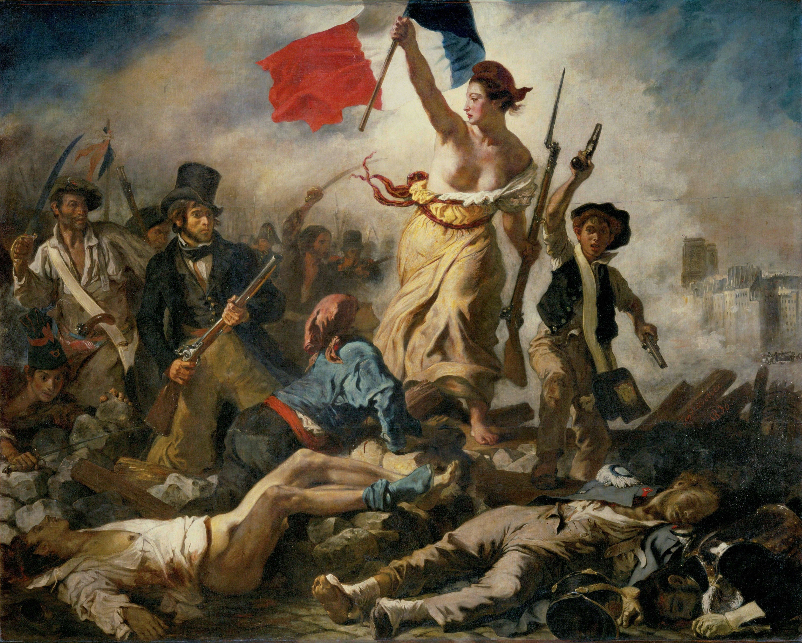

Genossen!
Emanzipation.
Vermietest du? Handelst du Aktien? Besitzt du eine Firma mit vielen Angestellten und Maschinen? Arbeitet dein Geld für dich? Bist du ein Investor? Nein? Du bist Proletarier! Es ist Zeit zu realisieren, dass du zur gleichen Klasse gehörst wie fast alle Menschen der Welt! Steh auf, schau dich um! Vergleiche, was du hast, mit dem, was die Reichen haben. Es ist nicht fair! Du arbeitest für sie und als Dank beuten sie dich aus und bereichern sich an den Früchten deiner Arbeit. Lasst uns gemeinsam unsere Ketten verlieren und eine Welt gewinnen!
Revolution.
Noch nie in der Geschichte der Menschheit haben die Mächtigen freiwillig ihre Macht hergegeben.
Rechte und Freiheit sind keine Geschenke, um allein das zu erreichen und zu bekommen, was wir an begrenzter Gerechtigkeit haben, musste sehr viel Blut fließen. Wir reden hier, aber nur von Europa. In anderen Ländern sterben unzählige Personen, die großteils von uns unterdrückt werden, im Kampf gegen Diskriminierung und die mit dieser oft gerechtfertigten Ausbeutung.
Sklaverei, Monarchie, Patriarchat, Rassentrennung, Homophobie, Arbeiterrechte, gegen all diese Dinge wurde gekämpft, doch leider heißt das nicht, dass das alles verschwunden ist, nein. Wie kann das überhaupt sein?
Ist unsere Demokratie kaputt?
Kurz und knackig: Ja!
Zwar hört sich das nach einer Verschwörung an, aber wenn unsere Demokratie funktionell wäre, sollte es eigentlich absolute Gleichberechtigung geben. Hass von Individuen gegen bestimmte Menschengruppen, aus welchen Gründen auch immer, ist natürlich nur durch Bildung bekämpfbar. Systematische Diskriminierung sollte aber bei uns durch viele Jahre Demokratie eigentlich weit in der Vergangenheit liegen. In der Realität werden dennoch Sünden wie Racial Profiling, der Gender-Pay-Gap und Ausbeutung der Arbeiter geduldet.
Ist es nicht im Interesse aller Völker dieser Welt, solche erbärmlichen Strapazen sofort zu beenden?
Dafür das unsere Demokratie von den Leuten für die Leute sein soll, wundert es mich, wie sehr die Leute darunter leiden. In einer echten Demokratie würde der Staat alles in seiner Macht tun, allen, auch politischen Minderheiten, zu helfen. Das ist ja der Sinn von unserem System nicht, so wurde es immer erzählt, durch Wählen können wir gemeinsam bestimmen, es soll geschehen, was das Volk will.
Hoppla! Da ist wohl was schiefgelaufen. Aktivist:innen werden verhaftet, Reiche spenden immense Summen an rechtsradikale Gruppen. Sieht mir fast so aus, als wär unsere Demokratie nur da, um eine Illusion von individueller Entscheidungskraft zu bekommen, während die Polizei als Arm der, durch Propaganda, Lügen und Manipulation an die Macht gekommenen, aktiv den Schrei nach Gerechtigkeit und Willen der Leute zerschlägt. Aber ich bilde mir das sicher ein, wer hätte schon das Interesse, daran auf das Leid anderer zu scheißen und geschweige denn überhaupt das Geld zum Finanzieren dieser Institutionen und der Propaganda? Niemanden kann Profit so wichtig sein, dass man Menschen und die Erde dafür zerstört.
Hoch lebe die freie Marktwirtschaft! Oh, stimmt, die Reichen würden das machen. Fuck.
Ok, wie kommen wir an die Macht?
In einer Demokratie der Mächtigen können wir nur mit vereinten Kräften an die Macht kommen und eine Diktatur des Proletariats durchsetzen. Durch eine Revolution!
Innovation.
Trotz des Schwachsinns, den man eingetrichtert bekommt, ist es ein Fakt, dass Menschen aus Leidenschaft erfinden und nicht, weil sie schnelles Geld mit ihren Entdeckungen machen wollen.
Fast alles, was wir haben, kommt aus öffentlicher Forschung. Im Kapitalismus forscht man nur nach Dingen, die Profitabel sind. Zum Beispiel Überwachung mit Internet-Tracker und Dinge, die schneller kaputt werden, sodass man sich öfters neue kaufen muss.
Kein Wunder, dass die NASA vom Staat bezahlt werden muss und die Sowjetunion überhaupt mit der Erforschung des Alls begonnen hat, denn es steckt kein Profit in diesen Sachen. Sind die Schlausten am reichsten? Nein, Einstein, Tesla, Hawking und viele weitere, die mit Abstand intelligentesten Menschen waren alle nicht reich. Aber Elon Musk und Jeff Bezos, die in wohlhabenden Familien mit guten Verbindungen geboren sind, dürfen sich die reichsten Menschen der Welt heißen.